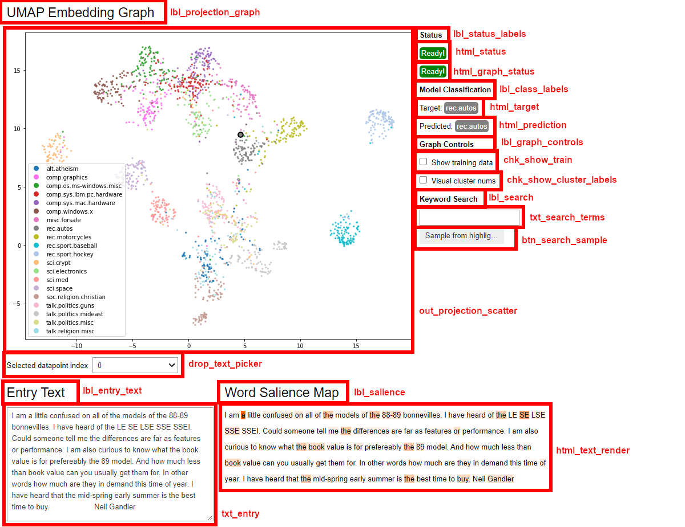
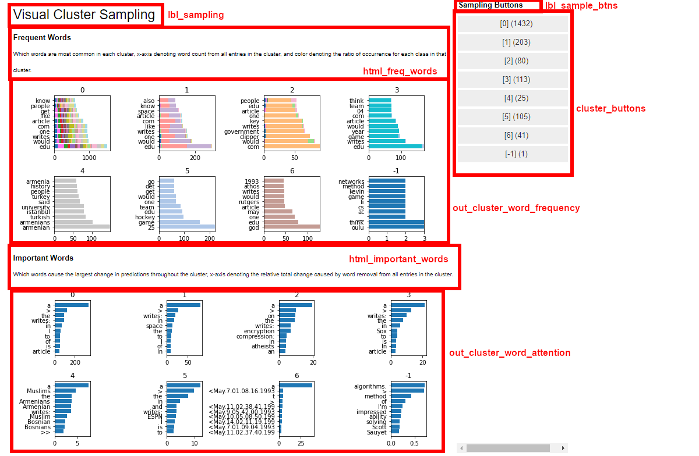
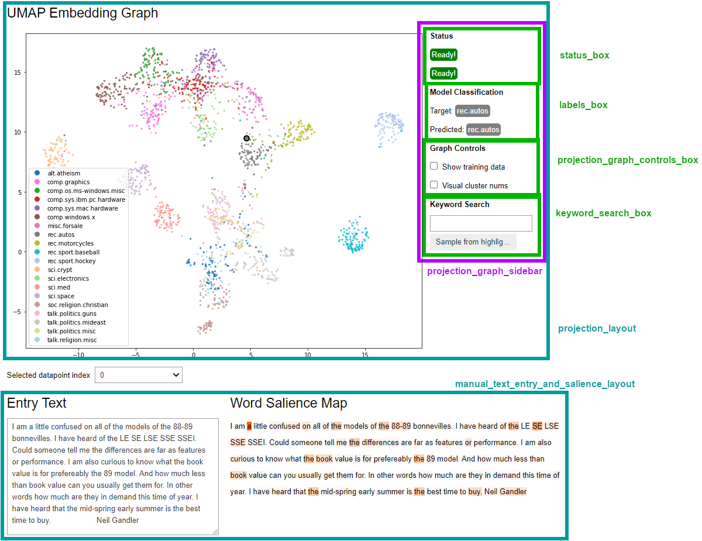
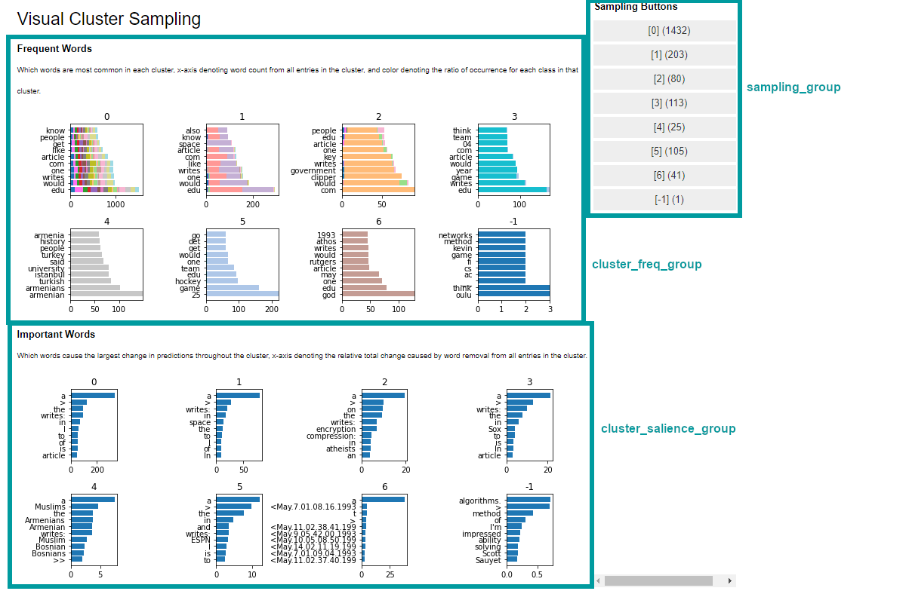

Dashboard Widgets
This page lists and shows the different widgets that compose
the full dashboard. While Dashboard.render() returns
the entire dashboard by default, all components can be customized
or manually accessed in order to construct the layout together
yourself.
Initialization
Note that all widgets are initialized when a new Dashboard
instance is constructed. Any changes made to the class widgets
before calling render() will persist in the returned
layout:
dash = Dashboard(wrapper)
dash.lbl_projection_graph.value = "<h3>Entry Embeddings</h3>"
dash.render() # altered 'entry embeddings' label will be in final layout.
The sections below list all of the different components that are set up in the dashboard class.
Any may be individually altered as desired. If you need an entirely different layout for the
dashboard, you can manually reference the components or groups and put them into your own HBox/VBox layouts.
You would manually render the results for this, rather than calling render():
dash = Dashboard(wrapper)
my_layout = HBox([
dash.projection_layout,
dash.manual_text_entry_and_salience_layout,
dash.drop_text_picker,
dash.sampling_group
])
display(my_layout)
Widgets
The below images show the individual widgets in each portion of the dashboard. All names are attributes that can be directly referenced from the wrapper instance.
 Sections
Below shows different collections of components that are wrapped in HBox/VBox layouts - these can alo be directly referenced from the wrapper instance.
 